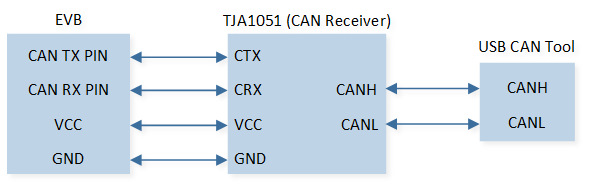
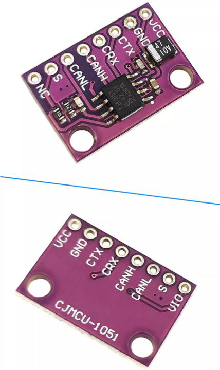
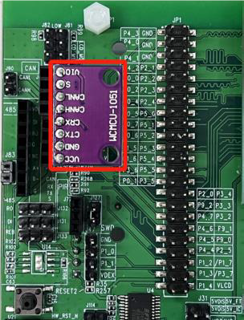

Transmit And Receive
该示例演示了 CAN 外设的收发数据功能。
CAN 外接 USB CAN 分析仪，通过 PC 端收发标准数据帧，扩展数据帧，标准远程帧，扩展远程帧等帧类型与 CAN controller 进行通信。
芯片端在 CAN 中断中接收 PC 下发的数据，并传输相同数据给 PC 端，PC 端收到芯片回的数据。
环境需求
该示例的环境需求，可参考 环境需求。
硬件连线
EVB 外接 TJA1051 CAN Receiver 模块，连接 P3_2（CAN TX PIN）和 CTX，P3_4（CAN RX PIN）和 CRX，连接 EVB 3.3V 和模块 VCC，连接 EVB GND 和模块 GND。
TJA1051 CAN Receiver 模块另一端通过 USB CAN 分析仪连接到 PC，连接模块 CANH 和分析仪 CANH，连接模块 CANL 和分析仪 CANL。
硬件连线示意图如下：

CAN 硬件连线示意图
CAN 收发器介绍
本示例中采用 TJA1051 模块作为 CAN 收发器，用户可自行选择所用的 CAN 收发器。 TJA1051 是一款高速 CAN 收发器，为 CAN 控制器提供差动发送和接收功能，传输速率高达 1Mbit/s。
{kind=link}

CAN 收发器模块
{kind=link}

CAN 收发器模块连接示意图
编译和下载
该示例的编译和下载流程，可参考 编译和下载。
测试验证
IC 复位后，CAN Tool 上会收到各个类型的帧。
使用 CAN Tool 给 IC 发送数据帧。
在 Debug Analyzer 工具上，打印接收到的帧数据。
[CAN] send standard remote frame [CAN HANDLER] MB_1 tx done ... [CAN HANDLER] MB_5 tx done [CAN] waiting for rx... [CAN HANDLER] MB_0 rx done [CAN HANDLER] frame_type 1, frame_id = 0x100, ext_frame_id = 0x00000 [CAN HANDLER] rx_data [0] 0x01 ... [CAN HANDLER] rx_data [7] 0xef [CAN] waiting for rx... [CAN HANDLER] MB_0 tx done
IC 将收到的数据帧发送回 tool，在 tool 上可以看到发送和接收的数据帧。
代码介绍
该章节主要介绍示例中的初始化和相应功能实现的代码和流程说明。
源码路径
工程文件和源码路径如下：
工程路径:
sdk\samples\peripheral\can\trx\proj源码路径:
sdk\samples\peripheral\can\trx\src
初始化
外设的初始化流程可参考 General Introduction 中的 初始化流程 部分。
调用
Pad_Config()与Pinmux_Config()，配置对应引脚的 PAD 和 PINMUX。void can_board_init(void) { /* Config pinmux and pad for CAN. */ Pinmux_Config(CAN_TX_PIN, CAN_TX); Pinmux_Config(CAN_RX_PIN, CAN_RX); Pad_Config(CAN_TX_PIN, PAD_PINMUX_MODE, PAD_IS_PWRON, PAD_PULL_NONE, PAD_OUT_DISABLE, PAD_OUT_LOW); Pad_Config(CAN_RX_PIN, PAD_PINMUX_MODE, PAD_IS_PWRON, PAD_PULL_NONE, PAD_OUT_DISABLE, PAD_OUT_LOW); }
调用
RCC_PeriphClockCmd()，开启 CAN 时钟。对 CAN 外设进行初始化：
定义
CAN_InitTypeDef类型init_struct，调用CAN_StructInit()将init_struct预填默认值。根据需求修改
init_struct参数，CAN 的初始化参数配置如下表。调用
CAN_Init()，初始化 CAN 外设。
CAN Hardware Parameters |
Setting in the |
CAN |
|---|---|---|
Auto Re-transmit Enable |
||
CAN speed parameter - brp |
3 |
|
CAN speed parameter - sjw |
3 |
|
CAN speed parameter - tseg1 |
13 |
|
CAN speed parameter - tseg2 |
4 |
调用
CAN_Cmd()，使能相应 CAN 外设。调用
CAN_INTConfig()，配置 CAN 接收完成CAN_RX_INT中断，发送完成CAN_TX_INT中断，错误中断CAN_ERROR_INT等。配置 NVIC，NVIC 相关配置可参考 中断配置。调用
CAN_GetBusState()，循环检查 CAN 总线状态，等待 CAN 总线打开。while (CAN_GetBusState() != CAN_BUS_STATE_ON) { __asm volatile ( "nop \n" ); }
备注
注意：如果程序卡在等待 CAN 总线打开处，请检查 CAN bus 是否连接准确。
功能实现
调用
can_basic_tx，依次发送标准数据帧，扩展数据帧，标准远程帧，扩展远程帧。使用设置的发送帧类型将邮箱配置为发送模式。
使能邮箱发送中断，等待 RAM 状态空闲。
void can_basic_tx(uint32_t buf_id, uint8_t frame_type, \ uint16_t frame_id, uint32_t ext_id, uint8_t *tx_data, uint8_t data_len) { CANError_TypeDef tx_error; CANTxFrame_TypeDef tx_frame_type; tx_frame_type.msg_buf_id = buf_id; tx_frame_type.frame_type = frame_type; tx_frame_type.standard_frame_id = frame_id; tx_frame_type.auto_reply_bit = DISABLE; tx_frame_type.extend_frame_id = 0; switch (frame_type) { ... } CAN_MBTxINTConfig(tx_frame_type.msg_buf_id, ENABLE); tx_error = CAN_SetMsgBufTxMode(&tx_frame_type, tx_data, data_len); ... }
备注
注意：如果使用同一个邮箱号连续发送多个帧，请务必保证前一帧发送完成后再发送下一帧。
发送完毕后调用
can_basic_rx，等待 PC 端发送帧数据。如果使能了 FIFO 模式则使用邮箱 12 进行接收。
屏蔽接收帧 rtr，ide，id 过滤，即接收所有帧。
失能 Rx GDMA，失能自动回复。
使用设置的接收帧类型将邮箱配置为接收模式。
使能邮箱接收中断，等待 RAM 状态闲。
void can_basic_rx(void) { CANError_TypeDef rx_error; CANRxFrame_TypeDef rx_frame_type; #if CAN_RX_FIFO_EN rx_frame_type.msg_buf_id = CAN_MESSAGE_FIFO_START_ID; #else rx_frame_type.msg_buf_id = 0; #endif rx_frame_type.extend_frame_id = 0; rx_frame_type.standard_frame_id = 0; rx_frame_type.frame_rtr_mask = SET; rx_frame_type.frame_ide_mask = SET; rx_frame_type.frame_id_mask = CAN_FRAME_ID_MASK_MAX_VALUE; rx_frame_type.rx_dma_en = RESET; rx_frame_type.auto_reply_bit = RESET; rx_error = CAN_SetMsgBufRxMode(&rx_frame_type); CAN_MBRxINTConfig(rx_frame_type.msg_buf_id, ENABLE); ... }
当发送完成或接收完成或出现错误时，进入中断处理函数
CAN_Handler。依次从产生接收完成中断的邮箱中读取与打印接收到的帧数据。
调用
can_basic_tx将接收到的帧类型与帧数据发送回去。调用
can_basic_rx等待下一次中断。
... CAN_ClearMBnRxDoneFlag(index); CANError_TypeDef get_error; CANMsgBufInfo_TypeDef mb_info; get_error = CAN_GetMsgBufInfo(index, &mb_info); ... CAN_GetRamData(mb_info.data_length, rx_data); CANDataFrameSel_TypeDef frame_type = CAN_CheckFrameType(mb_info.rtr_bit, mb_info.ide_bit, mb_info.edl_bit); ... /* Send back frame here. */ can_basic_tx(0, frame_type, mb_info.standard_frame_id, \ mb_info.extend_frame_id, rx_data, mb_info.data_length); /* Start rx next time. */ can_basic_rx(); ...
See Also
相关 API Reference 请查看：